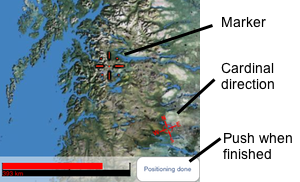

|
Place the colored arrow as close to the destination you
think the answer to the question gives.
You have 50 000 km to your disposal. When placing your arrow
off the target, those 50 000 km will shrink with as much as the
distance you where off. The purpose is getting through as many questions
as you can before those 50 000 km's run out. Try getting on the highscorelist.
|
|

|
More than one player
When playing with more than one player, the default game is
playing for points. The player that has its marker/arrow closest
to the destination given by the question, gets the point.
-
If two players are playing the closest gets one point.
-
In a three player game, the closest gets 2 point and the second closest gets 1 point.
-
A four player game will give the closest player 3 points, the second
closest 2 points and the third closest 1 point.
-
No points awarded to the player furthest away from the target.
The player with the most points
after 10 questions is obviously the one with the most Norwegian geography knowledge.
|
| NoteBoth the map, marked locations and borders are set up for a game, and will not have any pinpoint
accuracy. Still they should be close enough for a fun geography game.
For questions or comments send mail:
lemmus.ltd@gmail.com
|